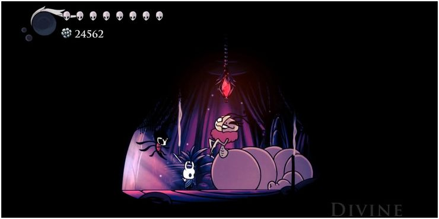

Farmear Geo y transformar los amuletos fragiles a amuletos irrompibles
FARMEO DE GEO
El geo es el tipo de moneda dentro del juego de Hollow Knight un juego estilo metroidvania el cual consiste en derrotar a los distintos jefes del juego
completando asi diferentes niveles y el modo principal o modo historia despues de esto existen numerosos DLC que son extenciones del juego con contenido adicional
dentro de las maquinas del juego existen 3 amuletos fragiles los cual si mueres estos se rompen y tienes que ir con el comepiernas, personaje que se encuentra en paramos fungicos
en la entrada por cruces olvidados
despues de haber comprado los amuletos con el comepiernas deberas haber activado el dlc de La Compañia Grimm
una vez activado el dlc deberas ir con divine que se encuentra en la primera carpa del circo en bocasucia, deberas llevar el amuleto que quierass
mejorar a irrompibilidad y despues interactuar con ella, te pedira que le dejes ver tu amuleto y se lo comerá, si lo quieres devuelta deveras pagar una
cantidad de geo un poco alta, ahi es donde entra en juego el farmeo de geo

para empezar a farmear necesitamos tener el amuleto de codicia fragil para obtener mas geo al matar enemigos, ojo que en este
punto lo tendremos como codicia fragil entonces yo personalmente recomiendo que te coloques el amuleto en la banca que esta en la estacion
olviada justamente donde haremos el recorrido de farming
una vez colocado el amuleto solo deberemos realizar el recorrido unas 20 veces para obtener 10k de geo, debemos tomar en cuenta que si se hace bien
el recorrdio cada recorrdio nos podria dar de 480 a 512 geos teniendo que matar 5 bichos voladores y que cada bicho volador suelta 5 cavasuelos. les dejo el video
de un amigo que tiene justo un tutorial de esto en youtube, hasta la proxima.